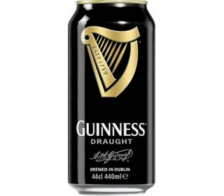

Пиво темное Guinness Draught

Знаменитый ирландский стаут. Отличается насыщенным хлебным ароматом и горьковатым привкусом, с яркими нотками обжаренного кофе.
Температура сервировки 11-13 °С. Гастрономические рекомендации: тигровые креветки, устрицы, мясные запеканки, мясо на гриле.
- Категория: Пиво темное, ж/б
- Бренд: Guinness
- Cтрана производитель: Ирландия
- Объём: 440 мл
- Состав продукта: вода, солод, ячмень, обжаренный ячмень, хмель, дрожжи
- Содержание спирта: 4.2

<< назад
©Все права защищены